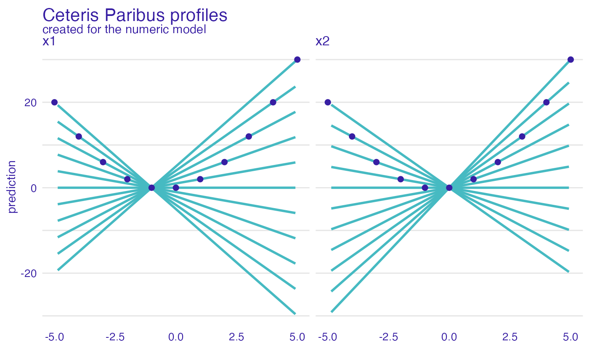
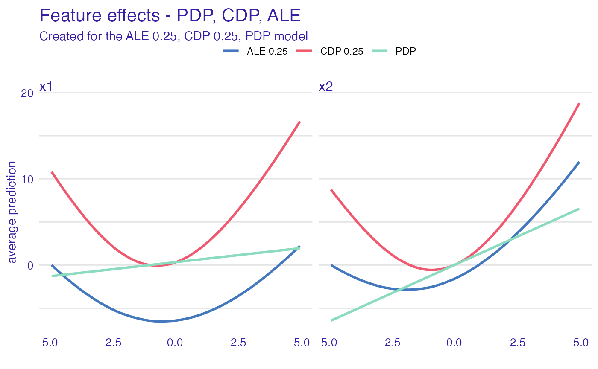
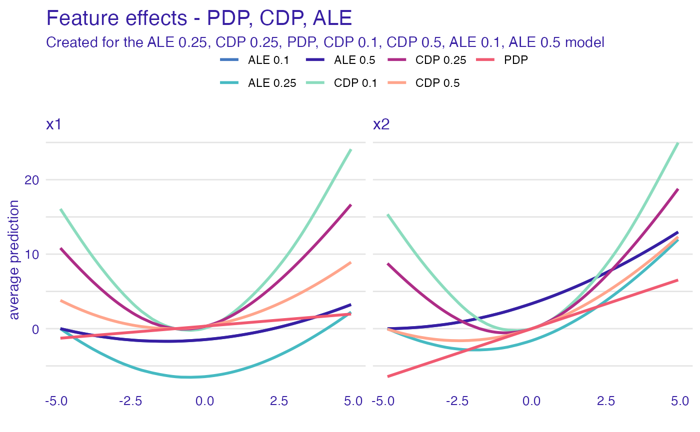
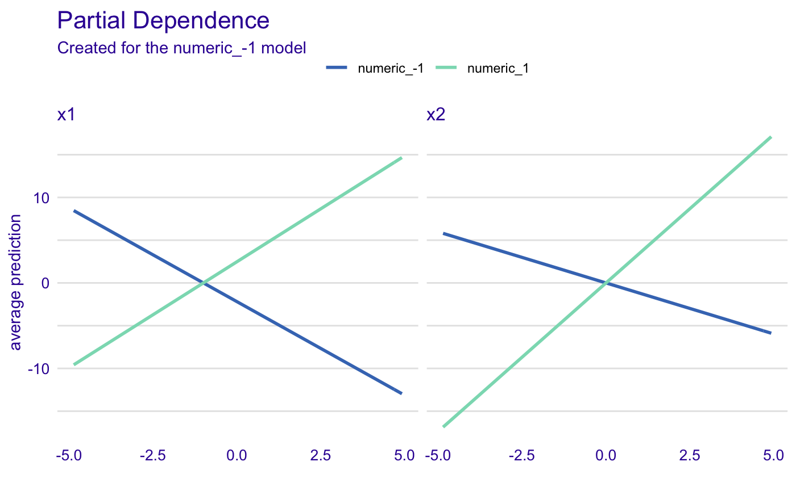
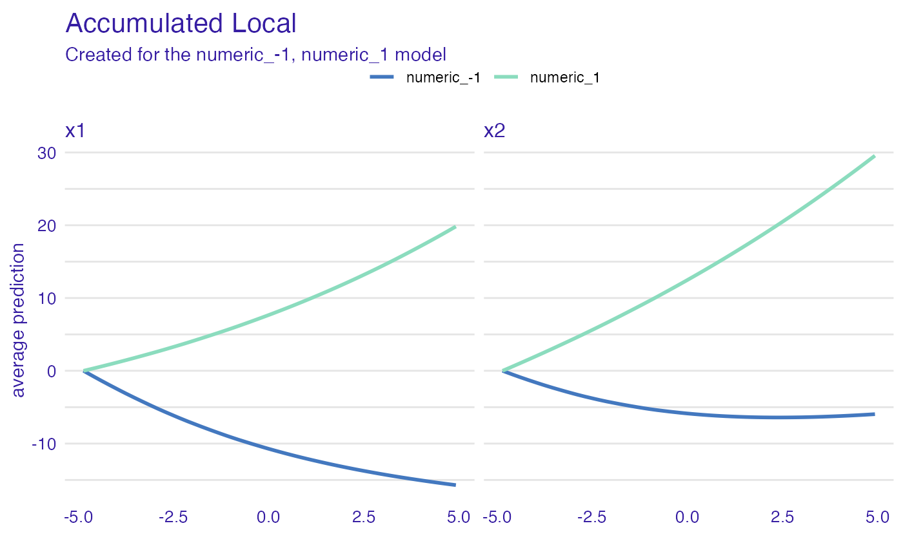
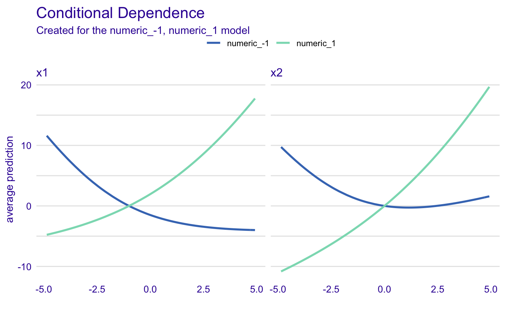

vignettes/vignette_simulated.Rmd
vignette_simulated.RmdLet’s consider a following problem, the model is defined as
\[ y = x_1 * x_2 + x_2 \]
But \(x_1\) and \(x_2\) are correlated. How XAI methods work for such model?
# predict function for the model the_model_predict <- function(m, x) { x$x1 * x$x2 + x$x2 } # correlated variables N <- 50 set.seed(1) x1 <- runif(N, -5, 5) x2 <- x1 + runif(N)/100 df <- data.frame(x1, x2)
In fact this model is defined by the predict function the_model_predict. So it does not matter what is in the first argument of the explain function.
#> Preparation of a new explainer is initiated
#> -> model label : numeric ( [33m default [39m )
#> -> data : 50 rows 2 cols
#> -> target variable : not specified! ( [31m WARNING [39m )
#> -> model_info : package Model of class: numeric package unrecognized , ver. Unknown , task regression ( [33m default [39m )
#> -> predict function : the_model_predict
#> -> predicted values : numerical, min = -0.1726853 , mean = 7.70239 , max = 29.16158
#> -> residual function : difference between y and yhat ( [33m default [39m )
#> [32m A new explainer has been created! [39mUse the ceteris_paribus() function to see Ceteris Paribus profiles. Clearly it’s not an additive model, as the effect of \(x_1\) depends on \(x_2\).
library("ingredients") library("ggplot2") sample_rows <- data.frame(x1 = -5:5, x2 = -5:5) cp_model <- ceteris_paribus(explain_the_model, sample_rows) plot(cp_model) + show_observations(cp_model) + ggtitle("Ceteris Paribus profiles")

Lets try Partial Dependence profiles, Conditional Dependence profiles and Accumulated Local profiles. For the last two we can try different smoothing factors
pd_model <- partial_dependence(explain_the_model, variables = c("x1", "x2")) pd_model$`_label_` = "PDP" cd_model <- conditional_dependence(explain_the_model, variables = c("x1", "x2")) cd_model$`_label_` = "CDP 0.25" ad_model <- accumulated_dependence(explain_the_model, variables = c("x1", "x2")) ad_model$`_label_` = "ALE 0.25" plot(ad_model, cd_model, pd_model) + ggtitle("Feature effects - PDP, CDP, ALE")

cd_model_1 <- conditional_dependence(explain_the_model, variables = c("x1", "x2"), span = 0.1) cd_model_1$`_label_` = "CDP 0.1" cd_model_5 <- conditional_dependence(explain_the_model, variables = c("x1", "x2"), span = 0.5) cd_model_5$`_label_` = "CDP 0.5" ad_model_1 <- accumulated_dependence(explain_the_model, variables = c("x1", "x2"), span = 0.5) ad_model_1$`_label_` = "ALE 0.1" ad_model_5 <- accumulated_dependence(explain_the_model, variables = c("x1", "x2"), span = 0.5) ad_model_5$`_label_` = "ALE 0.5" plot(ad_model, cd_model, pd_model, cd_model_1, cd_model_5, ad_model_1, ad_model_5) + ggtitle("Feature effects - PDP, CDP, ALE")

And now, let’s see how the grouping factor works
# add grouping variable df$x3 <- factor(sign(df$x2)) # update the data argument explain_the_model$data = df # PDP in groups pd_model_groups <- partial_dependence(explain_the_model, variables = c("x1", "x2"), groups = "x3") plot(pd_model_groups) + ggtitle("Partial Dependence")

# ALE in groups ad_model_groups <- accumulated_dependence(explain_the_model, variables = c("x1", "x2"), groups = "x3") plot(ad_model_groups) + ggtitle("Accumulated Local")

# CDP in groups cd_model_groups <- conditional_dependence(explain_the_model, variables = c("x1", "x2"), groups = "x3") plot(cd_model_groups) + ggtitle("Conditional Dependence")

#> R version 4.0.0 (2020-04-24)
#> Platform: x86_64-apple-darwin17.0 (64-bit)
#> Running under: macOS Catalina 10.15.4
#>
#> Matrix products: default
#> BLAS: /Library/Frameworks/R.framework/Versions/4.0/Resources/lib/libRblas.dylib
#> LAPACK: /Library/Frameworks/R.framework/Versions/4.0/Resources/lib/libRlapack.dylib
#>
#> locale:
#> [1] en_US.UTF-8/en_US.UTF-8/en_US.UTF-8/C/en_US.UTF-8/en_US.UTF-8
#>
#> attached base packages:
#> [1] stats graphics grDevices utils datasets methods base
#>
#> other attached packages:
#> [1] ggplot2_3.3.0 ingredients_1.2.0.9000 DALEX_1.2.1
#>
#> loaded via a namespace (and not attached):
#> [1] Rcpp_1.0.4.6 compiler_4.0.0 pillar_1.4.4 tools_4.0.0
#> [5] digest_0.6.25 evaluate_0.14 memoise_1.1.0 lifecycle_0.2.0
#> [9] tibble_3.0.1 gtable_0.3.0 pkgconfig_2.0.3 rlang_0.4.6
#> [13] yaml_2.2.1 pkgdown_1.5.1.9000 xfun_0.13 withr_2.2.0
#> [17] stringr_1.4.0 knitr_1.28 desc_1.2.0 fs_1.4.1
#> [21] vctrs_0.2.4 rprojroot_1.3-2 grid_4.0.0 glue_1.4.0
#> [25] R6_2.4.1 rmarkdown_2.1 farver_2.0.3 magrittr_1.5
#> [29] backports_1.1.6 scales_1.1.0 htmltools_0.4.0 ellipsis_0.3.0
#> [33] MASS_7.3-51.5 assertthat_0.2.1 colorspace_1.4-1 labeling_0.3
#> [37] stringi_1.4.6 munsell_0.5.0 crayon_1.3.4